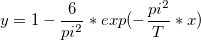
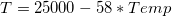
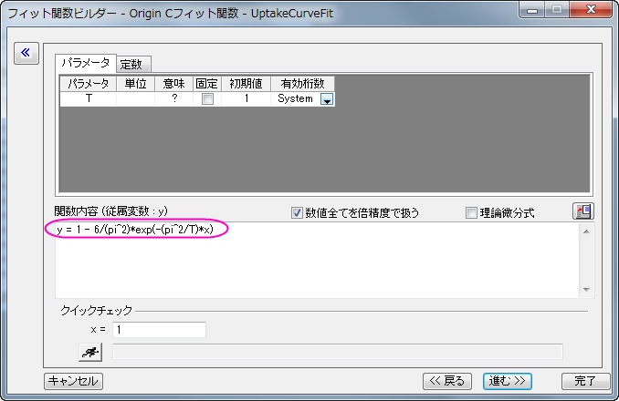
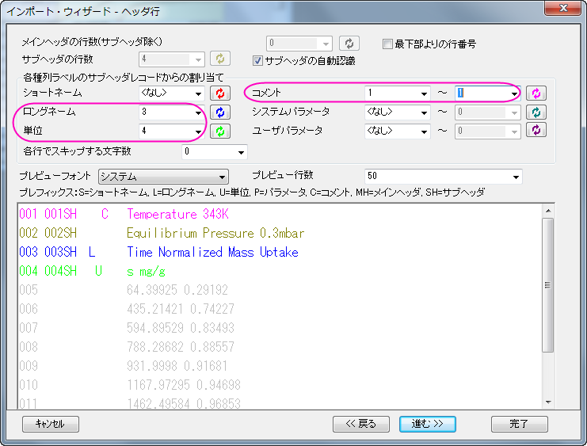
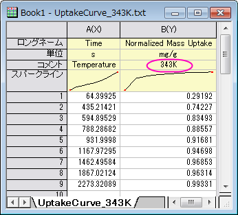
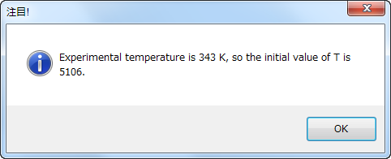
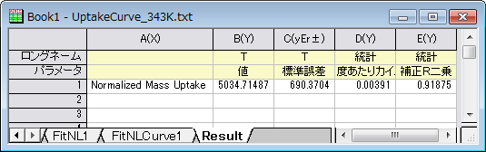
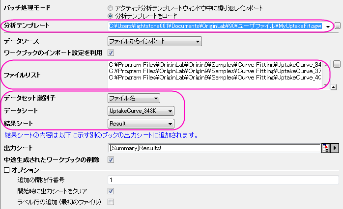
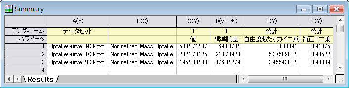

NLFit内でLabTalkを使用してパラメータ初期化を行う
CellVal-IniPara-Fitting
概要
以前のバージョンのOriginでは、フィットパラメータの初期化を行うのにOriginCコードを使用する必要がありました。Origin9.0 SR1以降では、LabTalkスクリプトを使用して初期化パラメータを設定できるようになりました。これは、ワークシートの値を初期パラメータとして使用したい時などに特に便利です。
このチュートリアルでは、3つの異なる気温に対してそれぞれの吸着摂取曲線を描き、結果を3つの.txt ファイルにエクスポートする方法を学びます。数の条件はヘッダ情報と同じ.txt ファイルに保存されています。isothermal-sphericalモデルの以下の数式を使用してデータをフィットします。

ここで、yは正規化された摂取質量(mg/g)、xは時間帯(s)、Tは時間定数(1/s)、それとフィットパラメータです。
時間定数と温度の関係については以下の経験式から説明されます。

各温度の摂取曲線では、この経験式からTを計算し、その値を初期値として曲線フィットに使用します。
必要なOriginのバージョン: Origin 9.0 SR1以降
学習する項目
このチュートリアルでは、以下の項目について解説します。
- ユーザ定義のフィット関数を定義し、LabTalkスクリプトを使用してパラメータ初期化を行う
- ワークシート内の値を初期パラメータとして使用する
ステップ
ユーザ定義フィット関数でパラメータ初期化スクリプトを作成する
- ツール:フィット関数ビルダ（または F8キーを押す）と選択してフィット関数ビルダを開きます。処理のゴールページで新しい関数の作成を選択して進むをクリックします。
- 関数名と関数形式のページでは、関数がUser Definedカテゴリーの中に作成されるようにします。関数名をとしてUptakeCurveFitを入力し、関数モデルは陽関数、関数式は OriginCとします。進むボタンをクリックします。
- 変数とパラメータページでは、独立変数と従属変数をぞれぞれデフォルトのままであるxとyにします。パラメータをTとして、進むをクリックします。
- Origin Cフィット関数ページでは、以下の数式を関数内容集ボックスに入力して進むをクリックします。
y = 1 - 6/(pi^2)*exp(-(pi^2/T)*x)

- パラメータ初期化コードのページでは、カスタムコードを使用するのラジオボタンを選択して、LabTalkを利用のラジオボタンを選択して、Labtalkスクリプトを利用できるようにします。初期化コード編集ボックスに、以下のコードを入力します。
//パラメータ初期化で実行するコード
//現在のワークシートを取得
range rpage=ry.getpage()$;
//ワークシートデータを取得
range rlayer=ry.getlayer()$;
//ワークシートデータのインデックスを取得
int inext=rlayer.index;
//データワークブックがアクティブである事を確認
win -a %(ry.getpage()$);
//データワークシートがアクティブである事を確認
page.active=inext;
//データワークシートの列2をアクティブ化
wks.col=2;
//列の内容から温度を文字列として取得
string str1$ = wks.col.comment$;
//温度の数字を文字列から取得
string str2$ = str1.Left(3)$;
//文字列の値から倍精度の数値に変換
double Temp = %(str2$);
//経験式を使用してTの初期値を計算
T=25000 - 58 * Temp;
//パラメータ初期化スクリプトが正確に実行されるか確認
type -b "Experimental temperature is $(Temp) K, so the initial value of T is $(T)."
| Notes:上記スクリプト内のryは、パラメータyの入力データ範囲に関する自動決定範囲変数です。このような範囲変数に関するシンタックスは「r+parameter name」になります。例えば、パラメータ名がTempの場合、範囲変数はrTempになります。
|
-
完了をクリックしてユーザ定義フィット関数UptakeCurveFitの定義を終了します。ユーザファイルフォルダに.fdfファイルが保存されているはずです。
ユーザ定義フィット関数を使用してデータをフィットする
- 標準ツールバーの新規プロジェクトボタン
 をクリックして、新しい行列を作成します。
をクリックして、新しい行列を作成します。 ボタンをクリック（または、メニューのデータ：ファイルからインポート：インポートウィザードと操作、またはCtrl+3キーを押す）してインポートウィザードを開きます。
ボタンをクリック（または、メニューのデータ：ファイルからインポート：インポートウィザードと操作、またはCtrl+3キーを押す）してインポートウィザードを開きます。
- データ操作では<Origin Folder>\Samples\Curve Fitting\フォルダにあるUptakeCurve_343K.txtファイルを選択します。進むボタンを2回クリックしてヘッダ行ページに移動します。ロングネーム、単位、コメントを順に3、4、1から1と設定します。
- 
- 完了ボタンをクリックして、ファイルをインポートします。実験温度はコメントの2列目に入力されました。これがUptakeCurveFitフィット関数で初期化コードLabTalkスクリプトを実行する時に取得するものです。
- 
- 列Bを選択して解析:フィット:非線形曲線フィットを選択(または、Ctrl+Yを押す)してNLFitダイアログを開きます。カテゴリーでUser Definedを選択し、関数ではUptakeCurveFit(User)を選択します。
- 注目ダイアログがポップアップし、実験温度と計算された時間定数を表示します。
- 
- パラメータタブに移動し、パラメータTの値が5106であれば、パラメータ初期化スクリプトが正常に呼び出せたことになります。
- コードタブを開き、パラメータ初期化セクションを開くと、ここでパラメータ初期化スクリプトを再度確認でき、値は
 ボタンをクリックすると表示できます。
ボタンをクリックすると表示できます。
- OKをクリックして注目ダイアログを閉じ、フィットをクリックしてフィットを実行します。
分析テンプレートを作成してバッチ処理を行う
- 先程のステップで作成されたFitNL1の結果シートに行きます。概要表の右にある三角形ボタンをクリックして新しいシートとしてコピーを作成を選択します。新しいシートが作成され、新しいシートの列Aを削除して名前をResultとします。
- 
- ワークブックをアクティブにしたまま、ファイル:ワークシートを分析テンプレートとして保存をクリックしてワークブックをMyUptakeFit.ogwとして保存します。
- 新しいプロジェクトを作成し、メニューからファイル：バッチ処理と選択してbatchProcessダイアログを開きます。
- 分析テンプレートMyUptakeFit.ogwをロードし、<Origin Folder>\Samples\Curve Fitting\内にあるUptakeCurve_343K.txt、UptakeCurve_373K.txt、UptakeCurve_403K.txtを選択します。データセット識別子ではファイル名を選択し、他の設定も下図と同じ状態である事を確認してください。
- 
- OKをクリックしてバッチ処理を実行します。実行される各ファイルに注目ボックスがポップアップされ、初期値として使用される値が表示されます。ポップアップされるたびにOKボタンをクリックしてバッチ処理を続けます。下記のようなレポートが表示されます。
- 